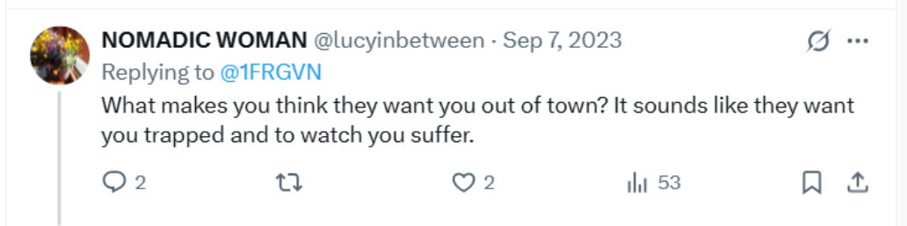

October 2023
- Gang and cyber-stalking continues apace.
- It’s relentless and I seem to be experiencing some persecutory evil every minute of every day.
- As a fake X account said to me in September, as if the person running it knew what was going on, “It sounds like they want you trapped and to watch you suffer.”

- How would they be watching me, I wonder?
Kevin
- I started “bumping into” this woman down the road whenever I went to get a takeaway or pop down to the shop.
- I bumped into her every time I went out for just a couple of weeks; then I never saw her again.
- She had a little white fluffy dog with her who was terribly friendly.
- She lived in the building opposite Mercadona.
- The woman had a weird way of talking; very very fast, and in a curious accent.
- Was she scared?
- To me, she seemed just normal, a little weird perhaps, but just out walking her dog; Kevin.
- I thought it was just a random occurrence, meeting a nice person in the street and chatting a while.
- Kevin was excessively over-friendly.
- She told me he was like that with all the girls.
- Given I was a drugged sex-slave without my knowledge in a spy-cam ridden apartment, everything and anything that happened while I was there is up for scrutiny, don’t you think?
- And it’s not like the people of Denia are not the most prolific animal porn producers on the planet now, is it?
- What in the world could have created a hell like Dénia?
- Please God, meeting Kevin the dog and his owner was just a random event any normal person going to the shop might experience!
- If not, it’ll be in the porn.
- It is obvious to me that stalkers are reading my tweets around the clock, and not just a few.
- Because I could see how many people were translating my tweets, I knew what time they had to be up.
- It was very surprising to see people reading my tweets at all hours of the night whenever I tweeted.
- I wondered who might be up to:
- Admin-read an interesting tweet that needed to be shared with the community of stalkers.
- Share the tweet on WhatsApp or wherever.
- See an alert about a new tweet on the WhatsApp group or wherever they were sharing my information.
- Read it as a participant.
- Were they shift workers working at night, or were they truly around the world. I suspect the latter.
The trumpet teacher drives past me in his car
- I’m walking back from the Indian restaurant with my takeaway.
- A car is driving slowly alongside me as I walk, kerb crawling.
- It is a bright primary-blue Fiat Doblo-type vehicle, the same car that Christine BJ has in white.
- As I turn into the road of my apartment block, the car follows slowly along beside me.
- As I’m opening the gate, the car drives slowly past.
- I look and I see the trumpet teacher is driving the car.
- He looks at me.
- I have no idea why he has done this.
- This blue Fiat Doblo often features in the stalking from now on.
- I saw Ana in it a month later in a most bizarre scenario.
- I guess the trumpet teacher was showing me the car so I’d recognize it again when I saw it.
- Also, online hacker-chatter was suggesting that the Cano Lopez family had paid for his work torturing me with this car.
- It was certainly a better one than the Peugeot I’d seen him driving before on various occasions.
- Although probably none of these cars are his own car; I rather expect that one to be fast, expensive, and new.
They are monitoring and surveilling me continuously
- Hopefully it’s now extremely clear that the evil people in Dénia know exactly where I am at any time.
- This could only be possible by tracking my mobile minute-by-minute.
- Every time I leave my house, for whatever purpose, they’re poised to begin some ridiculous choreographed torment.
- They must put enormous effort and resources into this.
- I wonder what benefit they could be getting from their behavior.
- Do they have a choice in whether they take part?
- It’s clear the good people of Dénia have a really, really nasty festering problem.
Paul and Alessandra
- I bump into Paul and Alessandra.
- They are in the car.
- Paul is blushing furiously; his face is beetroot.
- I understand it now to mean that Hazel showed him the child rape-gang porn between the last time I saw him and this moment, and he is overwhelmed with emotion.
- I’m going to suggest that this is a somewhat appropriate reaction for someone involved in a vile conspiracy to give a child victim of rape gangs a nervous breakdown or make them commit suicide, or whatever.
- I know that Paul was always just doing what he was told.
- But there again, I always see the best in people.
- Could Paul have been blushing because he had taken part in one of those Monday night soirees we keep hearing about?
Gang stalking by conservatory civil servants
Choir
- Bullying at choir continues.
- Salva gives us suggestive scores with titles and content related to the gang stalking.
- He’s unpleasant and rude.
- He makes fun of my name and the way I speak.
- Things I have said on Twitter have been shared with the students and the choir teacher Salva.
- For example, this rather innocuous tweet:
The tweet is available on the website: Fear & Loathing in Las Marinas
Cannabis bar right outside the conservatory
- Sometimes when we are sitting in choir class, the room fills with the strong smell of cannabis.
- It’s coming from the shop that’s just opened right outside the conservatory where 100s of kids and their parents visit every day.
- I find it strange that the town would allow this.
- Salva often closes the windows because of the strong smell.
Harmony
- Alfonso the harmony teacher seems to be only peripherally involved.
- Domingo’s students are still in the class with me and sometimes do or say curious things they’ve obviously been given instructions about.
- They’re always on WhatsApp.
- No-one speaks to me anymore.
- This is remarkable, especially from Samuel who never stopped his friendly chatting and translating for me the year before, and walking home with me too.
- Now he sometimes politely answers a question I might have, but usually in no more than two words.
Chamber music
- The music we play is extremely suggestive of what’s been going on; i.e. operatic themes for two female voices in a love tryst with a man.
- It’s clear why I was shepherded into this group in the online meeting.
- We first studied a tune from Norma where there is a dramatic love triangle between two women and a man, and the man has two daughters.
- I mean. Oh brother!
- At the end, interestingly, both women commit suicide.
- For my part, I am bravely playing my hand.
- I bring in I know him so well from the musical Chess.
- Katia remains angry with me, meaningfully.
- I see her waiting outside Ana Requena’s room and talking with her. They’re obviously friends, maybe!
- It’s tiring to be constantly dealing with this infancy.
Katia in the act
- I guess they’re not convinced she’s doing a good enough job though.
- I receive activity from the following account posted right before chamber music class.
- I understood it to mean that Katia was embroiled in the fiasco, but that was kind of obvious, I just didn’t care that much.
- However, it does seems like the Google search results, and fake accounts, and therefore hackers, are sometimes on my side.
- Is it him? I wonder. Is he helping me?
- In retrospect, I suspect Hazel Smith probably thought I wasn’t being tormented sufficiently. Or, they were setting up situations where I would feel like TT was on my side and helping me and so continue the ‘romance’ lie.
Piano
- Piano classes are good.
- Paqui does a good job of pretending she’s neutral.
- I like her teaching style.
- It’s a breath of fresh air after Maria.
- It reminds me of when I studied with Joan Carles after becoming totally fed up with Domingo in 2015.
Porn and sexual arousal
- I start to see more and more porn online around this time.
- It comes up in posts on my X timelines, on fake accounts who follow me or interact with me.
- Some porn bots yes, but with significant photos and meaningful comments in the profile.
- It’s also on google search results.
- I start to feel a bit bombarded with porn.
- I see lots of cartoon images of a big muscular man having sex or lying down after sex with a small woman.
- I see similar photo pics of big men with small women in various sexual scenarios.
- I start to see a lot of artistic porn, a lot of fellatio.
- Some of the pictures are quite good, I mean well done and a tiny bit tasteful.
- For the record, please note that I don’t like porn, at all.
- I know the porn is coming from hackers, and the frequency I see it is ramping up.
- Except I don’t really know what’s going on.
- I see multiple posts from accounts I have not followed that inform me of this.
- Indeed, the only way you could know what was going on is if you were aware of the Spanish cultural practice where a whole community targets a lone woman for some nonsense reason.
- It reminds me of how Spaniards saw the opportunity and rushed to get their neighbors killed in the civil war over jealousies and trifles.
- Except there’s more now.
- Porn.
- I continue to feel overwhelmingly sexually aroused in my apartment at various times of the day, usually if not always lunchtimes.
- I often masturbate.
- Am I being set up with visual triggers to match whenever I feel overwhelmingly sexually aroused?
October 7th 2023
- It’s a Saturday.
- I’m up early and on Twitter waiting for the usual stalker-game to begin.
- Too early, perhaps.
- Suddenly, I see posts coming in from Israel, many of them with live-streamed video footage.
- I can’t believe what I’m seeing.
- It’s like I’m there.
- I tumble into a triggered trauma reaction when I see Naama Levy with her bloodied pants and slit ankles paraded around for all the jeering brutes to see.
- After sexual abuse in 1989, and then again when I went to the police in 2006, and then again in 2015, my hands made fists for months on end; day and night, fists!
- Whenever I’m triggered, I make fists.
- I made fists for days during this period.
- Everything changes at that moment.
- I realize that all the requests for money for Palestinian children I had seen on X over the last years were a scam. I’m relieved I never fell for it.
- I see a distressed family in their own living room, one of their children murdered, her siblings traumatized out of cognition; her father speechless, his hands covered in his daughter’s blood.
- I see Shiri Bibas with her babies wrapped in a blanket, Ariel and Kfir, kidnapped by demons taunting her.
- I see the fear on her face, and I recognize it from my trauma history.
- Palestinians, civilians I heard, will murder them shortly after.
- Even though I don’t have the full picture of what’s happening to me in Dénia, at the level of my nervous system, I recognize that what I’m seeing online comes from the same source as that which is happening to me.
- In Israel, countless civilian barbarians are revealing their true nature for the world to see, while in Dénia countless Spanish and gitano barbarians are getting as close as they can to the same thing, and hiding themselves at the same time.
- Cowards! Each and every one of them.
- Never again is now.
- I’m including a link here to some of the footage from that morning: https://www.hamas-massacre.net/.
- If you haven’t seen it, look.
- I’m not going to watch it because unlike Greta, who thinks she already knows everything without having to look, I did look, while it was happening, and I saw enough to know.
- I felt like signing up the IDF then and there.
- Hackers will have been watching my reactions.
- Did the gangs decide to visit me this day; a golden opportunity to take advantage of the trauma-retriggering?
- (It’ll be in the porn, of course).
- Did I hear their jeering celebrations in my own sedated mind?
After understanding the true nature of what was happening to me in Spain (written in August 2026)
- It is my view that if porn-world - made up of millions, maybe billions of men around the world and some women - wasn’t paying for and delighting in rape, incest, gang-rape, sedated-gang-rape, sexual torture and extreme violence, spy-cam sex-slave porn of their unconscious colleagues and friends, horse porn, murder porn, pedophilia, bestiality, and baby rape every minute of every day of every week, the outcome of these vile acts would have been very different.
- Instead, everyone looked at it, saw it, then looked away and denied it.
- My view is that the porn-gangs of Dénia did come into my apartment that day, reveling in what was going on in the Middle East and my reactions to it, and made some sort of special to celebrate.
- The evidence for that will be in the massive, overwhelming evidential collection that now includes subscriber lists.
Strawberries
- I’ve always been sensitive, intuitive, and empathic; an easy target for bullies maybe.
- People who suffer early trauma, and especially those of us who have been sexually abused repeatedly, develop a kind of sixth sense.
- It’s called hyper-vigilance in psychology parlance and it’s part of the fight-flight-freeze-fawn cycle; i.e. if you know what you’re attacker is going to do next, you are more likely to escape.
- Add to that a kind of clairvoyant ability I’m sure I got from my grandmother on my dad’s side, who I like to think descended from the Tuatha Dé Danann of ancient Ireland, and a few Irish gypsy influences in the ancestry, and you might forgive someone like me having rather strange experiences if they were ever to take any psychoactive substance.
- It’s my belief that that’s exactly what I was ingesting through the water mains and any food items that had been interfered with in my apartment.
- Just over a week after October 7th, I’m sleeping.
- Something drags me out of bed around 2am to write a very important tweet.
- The urgency is rather like the time I was dragged out of bed to write a very important tweet declaring my romantic interest with TT in April 2023.
- In fact, looking back, I was dragged out of bed to write a very important tweet a lot while I was living at Carrer Furs, Dénia.
- Could this be a subconscious reaction to sedated assault; an inner awareness something appalling has just happened and I need to do something about it, and all I have as weaponry are my words and thoughts?
- And for good measure, an idea of how many times the first tweet was translated.
- I start to see strawberries on the ground wherever I walk.
- I’m pretty sure I’ve blown the mind of everyone watching.
- On my way to the conservatory one day, as I pass this spot on the Carrer de Manuel Sanchis Guarner, there’s a strawberry on the ground.
- At the same spot, I see the fat bloke in a vest that had been behaving extremely strangely when me and my Tibetan monk friend were at the beach.
- The gang-stalking events, online and at the conservatory, were triggering memories of events from the distance past too, such as the rape-gang from Tottenham in 1989, and other things I hadn’t thought about for a long while.
- It must have been curious for Hazel Smith and anyone she had told what had happened in 2007 to have seen me tweet content which suggested I knew, at least a little bit, about what was going on more broadly.
- I say three hours here, but it was much more, and it was November, right after the Kabbalah conference in Barcelona because I remembered telling Hazel and Sandra about a man there who had jokingly said people thought he looked like Osama Bin Laden.
- I wasn’t able to get up off the floor and into bed until the sun had come up that morning which would have been around 8am in November.
- Compare the above tweets with my experience in 2007.
- There are numerous tweets like this that I felt compelled to write after waking up in my bed (this one was at 1am).
- Do these tweets flag up the times I was sedated while sleeping?
- Did the porn-gang watch and wait for me to go to bed before applying the sedation tech?
- Do these compulsions to tweet what seemed random experiences come directly after those people themselves entered my flat while I was being regularly sedated and assaulted, and I recognized them unconsciously, and my unconscious awareness filtered the information up to consciousness?
- I’m guessing there’s masses more of this to come, then :(
Rocio Vidal
- In the Google search results of
@jctot19 x I start seeing a photo of Rocio Vidal, a famous YouTuber in Spain.
Photo is available on the website: Fear & Loathing in Las Marinas
- There’s a sadness in her expression.
- The photo is still there, even today; (check the commits for the time of writing).
Hair and make-up
- Has she just been in hair-and-makeup, before a shoot?
- In October 2024, I was reliably informed by a government official that Rocio Vidal was seriously hacked.
- On fake account activity in the summer of 2024, I see photos of Rocio, sitting on a bed, looking up at someone who is filming her.
- She has her fingers around her vest strap and it looks like she is about to take off her clothes.
- I’m reminded of plate lady when I see this, although the difference is, it looks like Rocio is doing what she’s told.
- When I was examining the
@jctot19, @sinremite, and other account activity back in July 2023, I noticed a lot of activity and communication between those accounts and Rocio Vidal’s X account @SchrodingerGata.
- Interesting, isn’t it.
- Another thing which is quite interesting is that when I was in Cauterets in September 2024, ostensibly fighting for my life, I thought I saw her at the Bistro du Boulevard with a bunch of Spaniards around lunchtime one afternoon.
- This was the period I realized I could do nothing online without ill-meaning and unseen eyes being aware of it, and I was busy posting hand-written letters to as many people as I could.
- I was also continuously sexually aroused at that time, all the way up in the Pyrenees for over a month already, and my online activity was infested with porn.
- I was also having an extremely intimate conversation online with stalkers; one of whom I considered to be the trumpet teacher; the man I love.
- The woman I saw was standing up in the crowd as if to point herself out; the others, mostly men, sitting down around her.
- Was it important I saw her?
Thoughts
- Is it possible that successful business women might agree to do porn, for free probably, so that their businesses won’t be shut down by hackers, or for some other financial reason?
- Is this yet another teat for cowardly men with no lives to suck on?
Telecommunications shop
- I decide to try and get my old mobile phone fixed so I can use it instead of the one hackers are accessing.
- I go to the telecommunications expert at Mobile Express C/ de Diana, 24, 03700 Alicante Spain which is run by Chinese people.
- It used to be a Movistar shop.
- As I approach the shop, a man I always see at the conservatory emerges from inside.
- He glances at me. He’s grinning.
- I don’t know who he is but he’s always around, at the conservatory, and in the street. I know his face extremely well.
- I assume he is the one who has been hacking me, he knows where I’m going to be after all.
- I start to wonder if he works as a computer technician at the conservatory.
- Inside the shop, the Chinese man clearly recognizes me.
- He can hardly stop smiling and grinning at me.
- His female counterpart keeps her head down and doesn’t look at me at all.
- She looks ashamed.
This may be nothing but…
- As I was searching for the address of the shop, I looked up experts, and this name and link came up.
- You can see the link is broken now, so it may be something rather than nothing.
- (Check git commits for exact timelines).
- The name was Juan David Lopez Moreno, and he was listed at this building, or the building opposite, as a telecommunications expert and he looked a lot like the man I just mentioned.
The gypsy glares menacingly at me
- I’m walking along the Las Rotas beaches one Saturday afternoon.
- As I approach a parked car, I notice a man in the driving seat staring at me.
- He’s glaring, menacingly.
- He looks ridiculous and I smile at him.
- He flinches.
- I recognize him from somewhere.
- I believe he was playing the guitar to accompany the woman belting about the frog in a box.
- And I am now absolutely certain he came with the fat man to move my piano out of my flat in Joan Fuster in June 2016.
My car is damaged on the Montgo
- I go walking on the Montgo, the mountain that overlooks the town, on Saturday 14th October.
- Usually I go to the top, but something told me to come back early which I did.
- I’m unusually concerned about my car which is parked next to the gun club.
- It’s not clear why I’m concerned. I guess I’m anxious wherever I go these days.
- As I’m walking back to the car park, I bump into a good-looking man who has three large hunting dogs with him.
- I’m about 5 minutes away from my car when I see him.
- The dogs are jittery as I pass them.
- I tell him how polite they are. The man laughs.
- As I get into my car, I notice the people at the gun club looking at me in a strange way.
- I leave, and go to do my shopping, then go home.
- The following Saturday I go to use my car again.
- I notice a scratch all along the left side, clearly done purposefully.
- The only time that could have happened was the Saturday before, while my car was parked beside the gun club.
- I’m furious and tweet about it.
- The man looks like Lorraine’s ex-husband; a cousin maybe.
First letter to the Generalitat
- Letters to the Generalitat Valenciana have been appearing on Google search
@jctot19 x since September.
- I don’t know who I can trust at the conservatory. It’s obvious Domingo controls everyone; teachers, staff, and children.
- I don’t want to call the police yet.
- I decide to write a letter of complaint to the Generalitat about what’s going on.
- The Generalitat Valenciana is the government school board who manages the conservatories in the region.
- I’m 100% sure they will help me.
- I look up all the important people I can find and I email them.
The letters are available on the website: Fear & Loathing in Las Marinas
- The Generalitat ignores me.
- I receive no reply at all, ever; not even a notification that my letter was received.
- In fact, I write again a few times to the Generalitat as things get progressively worse for me.
- I never receive any reply from them.
- Given the seriousness of what I’m saying and the ongoing threat to minors, it’s more than weird that no-one replied to me.
- A few days after I write, on the
jctot19 x Google search results, I see a picture of a trampoline at the bottom of apartment blocks which I take to mean that Domingo is very upset.
Hazel outside the conservatory
- The following week, as I was leaving the conservatory after classes, I notice Hazel Smith outside the front door.
- She is with an old white-haired man from Dénia I also know; a man I would recognize again.
- I find it interesting to see her because I didn’t mention her specifically on any of my tweets.
- And only she herself would understand the full implications of anything I had alluded to on X.
- From that moment, I was certain she was involved in the gang stalking.
- I wonder now if she is involved in the ongoing spiking/poisoning, or even the 2014 threat of poisoning from Domingo.
- I wonder now if she has entered my apartment, or is very active in the gang-stalking online communities, and many people in Dénia have seen her involvement already; something I’m completely unaware of to this day.
- Is it possible that the most evil people in a small town could have been introduced to something so abhorrent, yet utterly addictive, that gave them utmost power over the people they hated; friends, family members, colleagues, neighbors?
- Is that the underlying nature of this horrible story?
The petty tyrant
- There is a wonderful Toltec teaching in Carlos Castaneda’s books about the petty tyrant.
- To summarize, a petty tyrant is an essential aid to a warrior’s training.
- The petty tyrant puts obstacle-after-obstacle in the path of a warrior, who then has to negotiate a way around them.
- The nastier the petty tyrant, the better, too.
- I tweet a link about it to wind up the stalkers.
- Even so, there are great truths in here such as how the most appalling situations - in which your life is in constant and imminent danger - can catapult you into impeccable personal states of which you could hardly conceive of previously.
- I very much appreciated the bit about the “simple-minded Spanish”.
- And it seemed that Don Juan described something cultural related to vile traditions which nurture evil natures.
- In terms of petty tyrant activity, it appeared I had dreamed up a whole town of tyrants.
- In Don Juan’s terms, this is a gift from infinity which I can use to side-step death.
Halloween
- Alex, John, Paul, and I agree to go out for Halloween; a kind of remake of our evening all those years ago.
- I have been alluding to it on X without details apart from mentioning the ukulele I have just bought and the song I will be playing: Back to Black.
- Nevertheless, it seems the whole town knows I’m coming out for Halloween, even though I was never clear about it on X.
- On my way to meet my friends, I’m stopped for photos. Of me.
- After meeting my friends, Paul and Alex mention an
Ana, regularly. I file it away.
- John seems nervous.
- As we’re walking towards the Irish bar, he says he wants to go and do something else; find the tail I had lost from my cow costume.
- He says, “why don’t you come with me Katie?”.
- What was he afraid of?
- The others lead the way and we end up in the back room of the Irish bar on the Calle La Mar.
- It’s empty apart from an extremely dodgy (apparently) French bloke who says he studies guitar at the conservatory.
- He says his name is Laurent.
- He wants to know things about me.
- I know he’s part of it all. So does everyone else.
- He has a little helper with him who’s dressed as the joker and keeps glaring at me menacingly.
- I remember him from the beach.
- Once we’ve sat down at a table, all of a sudden, the empty room fills up, quickly.
- Everyone is listening to our conversation.
- I turn to Alex and say; “Sometimes, it takes an outsider”.
- I sing a song loudly that everyone can hear.
- It’s a cockney song,
You Made Me Love You, with apt lyrics for a manipulated woman repeatedly sedated for rape-porn.
- I sense minds blown all over.
- Alessandra tells me later, a few times, that the French man had wanted to know about us all going out all those years ago, and whether I had a ukulele and had sung Back to Black.
- What was he worried about?
- Was it all careening out of control already?
- That night, I got home and even though I had only had a few drinks, I was so ill I stayed in bed for about 36 hours, vomiting continuously.
- It felt like I had been poisoned.
- I tweet the song when I get home.
- I suppose Laurent could be Domingo’s uncle; a man able to hire, fire, award pensions, and target women and students at the conservatory.
- The very same uncle, maybe, related to Domingo’s aunt whose hair fell out and went yellow when she left him.
- I guess he could be Hazel Smith’s partner in crime too; the elusive Paco Sendra.
- He also looked a bit like the man Patricia Penny was with at Christmas 2021.
- Are these three men one and the same?
- I get home and I am horribly unwell until the morning of the 2nd of November when I have to get up to start my new job at Polygon.
- I believe I drank water directly from the tap that night.
- I’m in bed and my right kidney feels like it explodes.
- I vomit profusely until late in the evening of 1st November.
- All the neighbors will have heard me, the walls are extremely thin.
Tweets are available on the website: Fear & Loathing in Las Marinas
- The following tweets are a selection from this period.
- They relate entirely to the gang-stalking I’m suffering at the hands of teachers and staff at the conservatory, and their criminal associates.
- Most of the tweets are translated, a lot; so I assume they are being distributed and Spanish speakers are reading them.
@1frgvn
- Asking stalkers what’s going on and a reference, again, to the table. In this case, the reference was “staining the table” which is even more applicable to the rape-gang porn I was in as a child, perhaps.
- Reminding people that everyone is waiting for the worst-of-the-worst to get taken down.
- A comment on my observations about the girls at the conservatory; apart from, perhaps, the girls with gangster fathers.
- A warning for women about what might happen if you turn your school teacher down. This was still my assumption about the reason behind the attack at the time.
- I get annoyed with them.
- I tweet updates to the X audience.
- I mention that I kept a secret once. I’m referring to something Domingo asked me to keep secret, which I did until I told everyone he’d lied about being sick on December 5th 2014 to get off classes.
- I’m guessing now he didn’t even have to lie and his trip to the doctor on that morning before we left for the airport was for some other reason.
- References to screenshots I kept from the
@jackchardwood account activity over the summer.
- People I don’t know start messaging me. I ignore them.
- I tweet things that seem like I know what’s been going on.
- My thoughts about what might help men.
- I try to stay positive as much as possible.
- Mentioning the ongoing bullying for about a year.
- Is it possible that adult male teachers think the minor students they’re abusing actually like them?
- I have the sensation something really big is happening and it’s only very slightly to do with being manipulated into falling in love.
- A stalker account that followed me from the moment I went public. I was convinced it was either Domingo, or Hazel and Sandra Smith, maybe all three. Or maybe an interested party called Lucy?
- I had some interesting DMs with this account, which sent me identification documents when I expressed disbelief about who they said they were.
- This happened also with the
@Matthew49200183 account and the @MarkMoseley account from February 2024.
- Showing identification documents in DMs (that you couldn’t see because they were very blurry) seemed to be a pattern with these people.
- I tweet about how grooming feels and how to recognize it.
- School board support of gang-stalking by teachers and staff at public learning establishments is state-sponsored terrorism.
- With great aplomb, I take the living piss out of muscle men; specifically Domingo of course.
- There’s a huge amount of interest in this tweet.
- I’m having an ongoing conversation with a hacker at the same time on
@jackchardwood who comments precisely on tweet messages from this thread.
Hanging effigy
- I mention the fact there’s no effigy hanging outside my window like there was the previous Halloween.
- This tweet was not translated much and I expect it wasn’t shared for that reason.
- Did the Dénia audience think the attack had started after the trumpet teacher turned up and I fell in love with him?
- Would the audience be surprised to learn that the sex attacks against me had been intended since around 2006 in Dénia?
- It wasn’t the only tweet they didn’t share with the town.
- I tweet about my silk t-shirt teachers and staff at the conservatory damaged on 12th June.
Poisoned aunt
- This tweet is the first, last, and only time I mention anything to do with Domingo’s threat in 2014.
- Somehow, from this rather innocuous message which would hold no meaning at all for anyone who didn’t know what I was talking about,
aunts became a bullying theme.
Threats from hacker account
- A chat with the
@Matthew49200183 account becomes a serious of bizarre emissions and something that could be considered violent and threatening.
- I start to have communication with various fake accounts of exactly the same nature; random weird nonsensical chatter plus violent imagery.
- I’m certain that the Smiths are managing these accounts.
- It seems highly likely that all content like this is managed by criminal cyber-stalkers and tormentors.
@JackChardwood
- During the muscle tweet activity, Google search shows a picture of a famous Spanish actor looking pleased at a woman. I find it a bit insulting and post a pic right on back.
- I discuss the trumpet teacher with the hacker who is constantly posting references to “He’s just a baby”, and has been doing so for over a year.
- Explaining how I feel to the hacker who asked me where I was.
- During the muscles activity, I post a question.
- The hacker posts immediately on a tweet on my timeline saying, “not a foot wrong”!
- I tell the hacker what I think about him and how disappointing he is to me when he could do so much good in the world.
- I post how I think the hacker operates on vulnerable women and children targets.
- A post whizzes by about Mac spoofing at this moment.
- Another Google search result was a bunch of pictures of men saying “yes dear”, in response to some of my more withering tweets I expect.
- I continue to search for some heart in the Dénia teacher-and-conservatory-staff stalkers. I never find any.
- I thought the hacker had messed with my crypto app because it had stopped working. He complained to me that he hadn’t. And, indeed, it turned out he hadn’t.
- Responses always came on fake accounts with a message in the name, or first tweet, or profile.
- Always thinking of potential positive outcomes, I continue to try to turn the hacker.
- He could do a lot of good in the right hands but his heart would have to be of pure intention, which makes things tricky, dunnit.